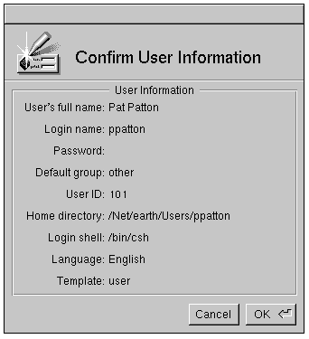

Release 3.3 Copyright ©1994 by NeXT Computer, Inc. All Rights Reserved.
| 2 | Setting Up a NetInfo Network | |
| Connecting your NEXTSTEP computers in a network allows users to share files, exchange mail, and log into any computer attached to the network. Setting up a simple network is a straightforward process. For the purposes of this discussion, a simple network is one with no more than about 20 computers that doesn't include any other types of systems. | ||
| This chapter covers the procedures necessary to set up a simple network, share files across that network, and create network-wide user accounts. Although the procedures in this chapter are geared toward a simple network, they're also used for more complex networks. | ||
| If your network is large or includes multiple types of computers, refer to Chapter 10, "Configuring a Large Network," or Chapter 11, "NEXTSTEP Computers in a Mixed Network." In addition, Chapter 3, "NetInfo Networking," Chapter 4, "Setting Up the Network File System," and Chapter 5, "Managing User Accounts and User Groups," may apply, depending on your situation. | ||
| Building a network of NEXTSTEP computers involves using the Manager applications in the /NextAdmin directory. These Manager applications let you set up network administrative information to create file-sharing and other services, allowing some computers to host resources for all computers connected to the network. The name NetInfo refers to the data structure for this network information. | ||
| The term domain refers to a set of information governing the use of resources such as disk space, use of peripherals, and special programs such as email and Network File Sharing (NFS). The information contained in a domain resides in a special database and is accessed through a server process dedicated to referencing that database. | ||
| Each computer has its own local domain containing information solely for that computer. | ||
| A network of computers requires at least one additional domain, conceptually on an upper level, that contains information about network-wide resources, such as which computer will host file server processes, email server processes, and user home directories. A NetInfo network may include several levels of domains, arranged in a hierarchy. At the lowest level are the local domains for each computer. At the highest level is the root domain for the entire network. The name local is the required name for the database that stores information for each individual computer, and the name / is required for the highest level (root) domain. Any domains at intermediate levels may be named as you, the system administrator, see fit. In general, this text will use the terms local domain and root domain to mean the lowest level and highest level domains, respectively. | ||
| The term simple network refers to a network of no more than a few dozen NetInfo computers, each of which supports its own local administrative domain and at least one of which supports the network-wide adminstrative domain. A simple network provides services such as network time coordination, email, and various file-sharing services that support common home directories for users, network-accessible application storage, and other file-sharing features as well as shared access to hardware resources such as printers and fax modems. | ||
| The first Manager application you will use to build your network is SimpleNetworkStarter (SNS). SNS creates an upper-level domain for the network as a whole that stores information about each of the computers on the network as well as specifications as to which computers host network-wide services and resources. Note that you may never have to change the local domain on any computer; all the networking information can be stored in the upper-level domain. | ||
| When you're done using SNS on the computer that will run the NetInfo server for the root domain, your network should be structured as a two-level domain hierarchy composed of the local domain for each computer on the network as well as the root domain that governs the entire network. At that point you can add computers which are factory-set to auto-configure themselves to your network. |
| Making a Plan |
| Before you jump in and start building your network, it's a good idea to have a plan. Such a plan will help make sure that all the components of your network are properly configured. It's much easier to set up a network correctly than it is to modify an existing network. If you haven't yet read Chapter 1, now would be a good time to do so.
As you make your plan, here are some things you need to decide: |
| 1. | Choose the computer that will run the master NetInfo server process for the root domain. | |
| A server is a program that provides resources to other programs. (A program that uses resources provided by a server is called a client). The resources provided can include disk space, a printer, or administrative information--such as the current time, or information about users and other computers. The master NetInfo server process for the root domain of the network provides access to the information in the root domain of that network. For backup, you should have other computers running NetInfo servers for the root domain, but only one is the master (read and write); the others are clones (read only). | ||
| The computer you select for this purpose should have extra memory and disk space and should be available at all times. Consider placing the computer that runs the master NetInfo server for the network's root domain in a secure location. | ||
| 2. | Choose a host name for each of the computers. | |
| Host names should be eight characters or less, all lowercase, and contain only letters, numerals, hyphens (-), and underbars (_). Choosing host names within these limits will make sure that they work in all situations. | ||
| 3. | Determine the Internet address for your network. | |
| In order for the computers on your network to communicate via the Internet to computers at other sites, each must be assigned a unique Internet address. See Appendix C, "Internet Addressing," for details about having a set of addresses assigned to you. Even if you aren't planning to connect to the Internet now, it's highly recommended that you register your network anyway. That way, you won't need to change all the addresses if you later decide to connect to the Internet. If you're absolutely certain your network will never be connected to the outside world, you can just use the default addresses provided by the various applications. | ||
| 4. | Choose a computer that will provide clone NetInfo service for the root domain. | |
| A clone server is a server process that references a read-only copy of a NetInfo domain database. It's always a good idea to have at least one clone server for the root domain so that your network will continue to function even if the computer running the master NetInfo server for the root domain becomes unavailable. Having a clone server can also help reduce the load on the master server by providing another source for administrative data. | ||
| 5. | Decide what kind of file service you'll be using and which systems will provide them. Make sure that any computers used for file serving have plenty of disk space (and probably additional memory as well). Remember that the term "server" means a process that provides a service of some sort (in this case, access to a computer's filesystem). | |
| The four kinds of file service to consider are: |
| Home directory--A home directory server provides access across the network to a directory that holds home directories for user accounts. More than one computer can run a home directory server. All directories that are made available in this way are listed as possible home directories in UserManager (see "Adding Users" later in this chapter). | ||
| Applications--You can save disk space as well as simplify network adminstration and upgrading by putting software applications in a central directory and making that directory available across the network. This directory will show up on each computer as /LocalApps. | ||
| General purpose--You may want to make other directories available across the network so that users can share them. For example, you might want to set up a directory to hold files related to a specific project. | ||
| Mail--A mail server provides access to a directory that stores incoming mail for the network. In addition to managing the email files, a mail server also handles distribution of messages. It's important for a computer hosting a mail server to have extra memory as well as sufficient disk space, for this computer runs the network-wide mail server process for the network and its /usr/spool/mail directory stores all mail files for the whole network. |
| Note: If you'll be using an external disk drive for file services, install and configure the drive before adding the computer to the network. See Chapter 7, "Attaching Peripherals." |
| 6. | Determine the physical layout for your network. | |
| Decide where each piece of equipment will go and what kind of physical access should be allowed. For example, you might decide to keep computers dedicated to providing network services in a locked room. If you want, you can assemble the computers and network now, but leave the computers powered off. Otherwise, you can assemble the computers as you go. | ||
| 7. | Decide whether each user should have a network account or local account. | |
| In most cases, you should use network accounts rather than local accounts. Network accounts can be used from any computer on the network: the account information resides in the root NetInfo domain, and the account's home directory is accessible through the network. Local accounts restrict each user to a specific computer. See "Adding Users" later in this chapter. |
| Setting Up the Master NetInfo Server |
| The first computer you need to set up is the computer that will run the master NetInfo server for the network's root domain, the source of administrative data for all of the computers on the network. This computer will serve a network-wide NetInfo database, which stores information about client computers, users, and other services. (For more details about NetInfo, see Chapter 3.) SimpleNetworkStarter (SNS) is the Manager application to use for this job. |
| 1. | Make sure the computer you've chosen to run the master server is not attached to the network, then power it on. | |
| 2. | You must have a password assigned to the root account. If you've already assigned one, log in using any valid account. If not, follow these steps to assign passwords: |
| a. | If this is the first time you've turned on this computer, choose a language and keyboard when prompted. | |
| b. | Use the Preferences application to assign a password to the me account (for more information, see the User's Guide). | |
| c. | Log out, then log back in as root (because root doesn't have a password, you won't need to enter one in the login window). | |
| d. | Assign a password to root using the Preferences application. |
| 3. | Start up SimpleNetworkStarter, located in /NextAdmin. | |
| If you're not logged in as root, you're prompted for the root password. |
| . |
| After SNS accepts your login it inspects the /etc/netinfo directories, makes backups of all the NetInfo databases as well as the /etc/hostconfig file. This will take up to a minute. SNS saves the /etc/netinfo directory as the /etc/netinfo.backup directory and the /etc/hostconfig file as the /etc/hostconfig.backup file.
SNS keeps a log of its activities which you can inspect using the Log command of SNS's main menu. Note that lines in bold typeface denote changes in SNS's activities and Italics denote conclusions SNS has reached. SNS keeps a copy of its log in the /usr/adm/SNS.log file. Note that SNS overwrites its log information onto the /usr/adm/SNS.log file from session to session, obliterating the history. You can inspect /usr/adm/SNS.log by using the Edit application. Note also that the SNS.log file is plain ASCII, without bold and Italic font distinctions you see on-screen as SNS is running. SNS then presents its main window. |
| 4. | Click the button labeled "Provide the services specified below" in the top section of this window. This sets the default configuration and enables the switches in the bottom section of the window. If SNS does not detect a master server on the network, it sets a checkmark in the first switch, "Maintain the master copy of network administrative data." | |
| 5. | Enter the host name you've chosen for this computer in the Hostname field of the center section (see "Making a Plan" earlier in this chapter). | |
| 6. | Enter the appropriate Internet address in the IP Address text field of section 2. See "Making a Plan" earlier in this chapter, and Appendix C, "Internet Addressing." |
| The Network Options button is used to modify information specific to large networks or networks that include different types of computers. The NetInfo Options button lets you set up a clone server on a new subnet. If your network falls into either of these categories, see Chapters 10 or 11 for more information. You won't need to use it when you set up a computer that runs the master Netinfo server process for a network. For a simple network, you can ignore these buttons. |
| Setting Options
Section 3 of SNS's main window lets you specify what services you want this computer to provide. The file sharing services let you specify what portions of this computer's filesystem to make available to the network. You are now ready to set options for your computer in section 3 of the window. |
| 1. | The first switch in section 3, labeled "Maintain the master copy of network administrative data," is already checked, by default, to set this computer up to provide master NetInfo services. Note that if you are setting up network domains and services for the first time, SNS will present an Alert panel if you uncheck this switch, saying "The first server you configure must have a copy of the administrative database." Click OK in this Alert panel and SNS will set a checkmark for this switch. | |
| 2. | Check the switch that's labeled "Limit access to network administrative data to the local network" if you want to increase the security of the data you've stored in the network-wide database. With this switch checked, the data in the NetInfo database is only available to the computers making up this network. If you have a large network made up of subnets, see Chapter 10, "Configuring a Large Network." | |
| 3. | Check the switch that's labeled "Automatically add new NEXTSTEP systems to the network" if you want new computers to be added to the network simply by attaching them and powering them on. If you click the switch to turn it off, you'll have to add new computers "by hand" with HostManager. See Chapter 3 for details. | |
| 4. | Leave the switch checked that's labeled "Require a password to add computers to the network" if you've elected to use automatic host addition and you want to make the process more secure. With this feature turned on, you'll be prompted for a password whenever you add a new computer to the network. (You'll set this password during the configuration process.) If you click the switch to turn this feature off, anyone can add a NEXTSTEP computer to the network without knowing a password. | |
| 5. | Check the switch that's labeled "Run network time server software on this computer" if you want all computers to get their time from this computer rather from their local system clocks. This feature makes sure that the time is synchronized for all computers on the network. This is important if you share any files across the network, to make sure that file modification and access times are kept consistent between computers. Turning this feature off means that each computer will set its time independent of the others. | |
| 6. | Check the switch that's labeled "Maintain the network's e-mail server" if you want this computer to provide the network e-mail services. Be sure this feature is turned off if you'll be using some other computer for this purpose. |
| Setting Up File Services
Now that you've set all the network options, you can determine whether you want the computer hosting the master NetInfo server to provide any file-sharing services as well. In general, it's not a good idea to combine a master NetInfo services with file-sharing services because the processing requirements can degrade performance. On very small networks (fewer than about 10 computers), this shouldn't be a problem. |
| 1. | Check the switch labeled Homes for network users if you want this computer to serve a directory used to hold home directories. | |
| By default, SimpleNetworkStarter will create a directory named /Users for this purpose. | ||
| If you want to use some other directory to hold home directories, you must be sure it already exists on the computer you're working on. Click the Set... button, and a browser will appear showing the computer's filesystem. Select the directory. | ||
| Once you've completed building the network, the directory chosen here will appear on all computers on the network as /Net/hostname/directory, where hostname is the host name of the computer providing the filesystem storage space and directory is the directory chosen. If you are working on a computer named earth using SNS' default, other computers will show the /Net/earth/Users directory. This directory will also appear as one of the choices for home directories in the UserManager application. See "Adding Users" later in this chapter. | ||
| If you don't want this computer to serve home directories, click the switch so that the check disappears. | ||
| 2. | Check the switch labeled /LocalApps if you want this computer to serve a shared /LocalApps directory. A shared /LocalApps directory is used to provide a central location for applications. | |
| By default, a directory named /LocalApps will be created and used for this purpose. | ||
| If you want to use some other directory to provide network access to application programs, you must be sure it already exists on the computer you're working on. Click the Set... button, and a browser will appear showing the computer's filesystem. Select the directory. | ||
| If you don't want this computer to share applications, click the switch so that the check disappears. | ||
| 3. | Click the switch labeled General Purpose if you want this computer to provide some other shared directory (such as a directory containing project files). | |
| By default, a directory named /General will be created for you. | ||
| If you want to use some other directory to be used instead, you must be sure it already exists on the computer you're working on. Click the Set... button, and a browser will appear showing the computer's filesystem. Select the directory. Once the network configuration is complete, this directory will show up on other computers as /Net/hostname/directory, where hostname is the host name of the server and directory is the name of the directory chosen. | ||
| If you don't want to serve a general purpose directory, leave the switch unchecked. |
| Building the Network
Now you can start building your network. |
| 1. | Review the selections you've made and make sure they're what you want. | |
| 2. | Click the button labeled Configure to begin the process of configuring the network. | |
| 3. | If you haven't set a password for the root account on this computer, you're required to set one. Enter the password, then verify your typing, as prompted. |
| The application now creates a network-wide NetInfo database, which will be used to store administrative data for all network computers to share. |
| 4. | If you've chosen to use a password for adding computers to the network, you're prompted to set one. Enter the password twice, as prompted. |
| 5. | When the panel appears asking you to attach the computer to the network, do so. Once attached, click OK. |
| Once the database is created, network services are started. When all of the services have been started, you're returned to the main window. |
| Setting Up Other Servers |
| With the shared administrative server configured, it's time to configure the rest of the servers. For a network of more than a few computers, you will probably want to configure other servers so that each runs on its own computer.
Note: If you haven't chosen to use automatic host addition, you'll need to add the other servers with HostManager. See Chapter 3, "NetInfo Networking," for details. |
| 1. | Connect a new computer to the network. Do this before you start it up; otherwise, it won't be correctly added to the network. | |
| 2. | Turn on the computer. In a few moments, a window appears with the following message: |
 Network doesn't recognize computer.
Network doesn't recognize computer.
 Enter host name:
Enter host name:
| Enter the host name you've chosen for the computer and press Return. |
| 3. | Next, you're asked if you want to add the host to the network. |
 Add computer to the network [y/n]?
Add computer to the network [y/n]?
| Type y and press Return. |
| 4. | If you're using a password for automatic host addition, you're prompted for it. |
 Enter network password:
Enter network password:
| Enter the network password and press Return.
If you see any messages other than those discussed here, see the "Troubleshooting" section later in this chapter. |
| 5. | If necessary, set the language and keyboard. If you haven't done so yet, add passwords for the me and root accounts. | |
| 6. | Start up SimpleNetworkStarter. | |
| 7. | Click the button labeled "Provide the Service Specifed Below." This will enable some of the switches in the bottom section of the window. | |
| Note: Don't change the values in the Host Name and IP address fields. If you do, you'll get an error message when you try to configure the computer. | ||
| 8. | If you want this computer to run a clone server of the network NetInfo database, leave the switch labeled "Serve the shared..." checked. Otherwise, click the switch to uncheck it. | |
| Note: It's a good idea to set up at least one clone server for your network. | ||
| 9. | If you'll be using this computer as the post office, click the appropriate check box. If some other computer on the network is already providing this service, this option won't be available. |
| 10. | If you'll be using this computer as a file server, set it up using the appropriate check box and directory well. See the previous section for details. | |
| 11. | Click the button labeled "Configure." A User Authentication panel appears. | |
| 12. | Enter the password of the root account of the root NetInfo domain. | |
| 13. | Repeat these procedures for each additional computer that will provide network services. | |
| 14. | Although it's not always necessary, it's a good idea to reboot all the computers providing network services. Power down all computers, then reboot the computer running the master NetInfo server for the root domain, then turn on each of the other servers one at a time. |
| Adding Other Hosts |
| You can now add the remaining computers to the network. Follow these procedures for each computer.
Note: If you haven't chosen to use automatic host addition, you'll need to add the other hosts with HostManager. See Chapter 3, "NetInfo Networking," for details. |
| 1. | Attach the computer to the network, then turn it on. | |
| 2. | When you're prompted for the host name, enter the one you've chosen. | |
| 3. | The configuration server asks if you want to add the host to the network. Type y and press Return. | |
| 4. | If you're using a password for automatic host addition, you're prompted for it. Enter the network password and press Return. | |
| If you see any other messages, see the "Troubleshooting" section later in this chapter. | ||
| 5. | If necessary, choose a language and keyboard. If you haven't yet, set passwords for the me and root accounts. | |
| 6. | If you want to secure the local administrative data, do the following: |
| a. | Start up SimpleNetworkStarter. | |
| b. | Click the button labeled "Access shared network resources as a client." | |
| c. | Click "Configure." |
| 7. | Repeat for each client. |
| You now have a complete NetInfo network. |
| Testing the Network |
| After completing the configuration of your network, it's a good idea to test things and make sure everything is functioning properly. If you encounter any problems performing these steps, see the "Troubleshooting" section at the end of this chapter. |
| 1. | Verify that /LocalApps is being shared: |
| a. | Put a file in /LocalApps on the computer providing file services for the /LocalApps directory. . | |
| b. | Log into various other computers and check the File Viewer to make sure that the file shows up in /LocalApps. | |
| c. | Remove the file. |
| 2. | Verify that a general-purpose file server is functioning, just as you would an application server: |
| a. | Create a file in the directory being served. | |
| b. | Log into a few computers and check that the file and directory appear in the File Viewer. The directory will appear as /Net/hostname/directory, where hostname is the host name of the file server, and directory is the name of the directory being shared. | |
| c. | Remove the test file. |
| 3. | To test a home directory server, first make sure the directory is accessible across the network: |
| a. | Create a file in the directory being served. | |
| b. | Log into a few computers and check the File Viewer to make sure the test file appears in the browser. The file should show up as /Net/hostname/directory/file, where hostname is the host name of the file server, directory is the name of the directory being shared (if you used the default directory, it will be named Users), and file is the name of the test file. | |
| c. | Remove the test file. |
| The second half of testing a home directory server is to verify that UserManager recognizes the directory as a valid place for user accounts. See "Adding Users" later in this chapter. |
| 4. | To test the mail server, send a few mail messages and verify that the mail is received. This is easier if you add a couple of network accounts, then send mail between them. Be sure to send and receive on various computers, including the computer running the mail server. | |
| If you want to test mail before you've added accounts, you can send a message from me to root. |
| Adding Users |
| Now you're ready to add new users. This section details how to use UserManager to add a network user account. |
| 1. | Log into the computer that is running the home directory server. If more than one computer provides home directory services, log into the appropriate one. You can only create home directories with UserManager while logged into the computer that holds the directory. | |
| Note: If you want to be able to add users from a computer other than the one running the home directory server, you'll need to use NFSManager to grant root access to the home directory across the network. See Chapter 4, "Setting Up the Network File System," and Chapter 5, "Managing User Accounts and User Groups," for details. | ||
| 2. | Start up UserManager, located in /NextAdmin. | |
| 3. | If you're not logged in as root, you're prompted for the root password. Enter the root password and click Login. |
| 4. | Choose New User from the User menu. The User Type panel appears. |
| 5. | Click Network. The Select NetInfo Domain panel appears. (If you choose Local in the User Type panel, you go directly to the New User window.) |
| 6. | Click / in the left column, to indicate that the user account should be available from any computer on the network, then click OK. The New User Short Form window appears. |
 |
| 7. | Complete the New User window as follows: |
| a. | Enter the user's full name in the text field of the same name. You're free to use uppercase characters, lowercase characters, and spaces in this field. | |
| b. | Enter the account name in the Username field. This is the name the user will log in with. Each account name must be unique, contain no more than 8 characters, be all lowercase, and contain no spaces. A common convention at sites with many users is to use a person's first initial and last name as their account name (ppatton, for example). At smaller sites, first names are usually sufficient (pat, for instance). | |
| c. | Enter a password into the Password field. For security reasons, what you type is not displayed. A password must be no more than 8 characters and contain no spaces. A combination of uppercase and lowercase letters with numerals and other characters will make the password harder to guess, and therefore more secure. | |
| Note: If you decide not to assign a password at this time, make sure that each user adds a password immediately. An account without a password can be used by anyone. | ||
| d. | Accept the home directory that UserManager specifies, the /Users directory. | |
| Note: Chapter 5, "Managing User Accounts and User Groups," presents information for specifying home directories of your choice. | ||
| e. | If necessary, change the language choice for this user by pressing the Language button and dragging to the appropriate choice. |
| 8. | Choose Save from the User menu. | |
| 9. | If you assigned a password to this user, a panel appears asking you to verify that password. Enter the password, then click OK. |
 |
| 10. | A panel appears asking you to verify the components of the new user account. Note that several values were assigned by default (for more information on these fields, see Chapter 5, "Managing User Accounts and User Groups"). Review the values and click Yes if they're correct. (If they're not, click No. Correct the fields in the New User window, then choose Save again.) |
|  |
| 11. | The next panel informs you that the user's home directory doesn't exist, and asks if it should be created. Click Yes. | |
| After a few moments, the New User window returns. | ||
| 12. | You can repeat these steps to create additional accounts. Chapter 5, "Managing User Accounts and User Groups," shows you how to add multiple users in a single session. |
| Maintenance Planning |
| Now that you have a functional network with user accounts, you might think you're all done. However, this is only the beginning. You now have to maintain the network you so carefully constructed. It's a good idea to put together a plan detailing how you'll keep your network in top form. Things to consider include: |
| How and when file backups will be performed. | ||
| How space conflicts will be resolved when a computer providing file services run out of disk space (probably sooner than you expect). | ||
| How the network will be reconstructed in the case of a major catastrophe. | ||
| Which person will be responsible and which procedure will be followed when network troubles arise. |
| It's also a good idea to maintain a written log of activities. For example, you might want to track information about backups, adding or deleting users, installing new equipment, and troubleshooting sessions. |
| Troubleshooting |
| If you have problems with any of the procedures in this chapter, use this section to help solve them.
Multiple Computers Can't Access a Shared Directory |
| The computer providing service isn't turned on or isn't booted--Turn the computer on and/or boot it. | ||
| The computer providing service is having software problems (is frozen or has crashed)--Reboot the computer. | ||
| An external disk has become disconnected or turned off--Turn off the computer, reconnect and/or turn on the external disk, then reboot the computer. | ||
| A directory isn't properly configured--Use SimpleNetworkStarter or NFSManager to verify that the directory is being shared correctly. |
| One or More Computers Aren't Communicating with the Network |
| A computer isn't attached to the network--Attach the computer and reboot it. | ||
| None of the computers running NetInfo servers on the network are turned on--Turn on the computers. | ||
| A computer was allowed to boot without a network--Reboot the computer. (If the configuration server is slow to respond, a prompt appears during the boot process asking if it's OK to continue without the network connection. Pressing Control-c in response to this prompt will disable the connection to the computer running the network server. A configuration server is a process that provides an address and name to a requesting process on a booting computer; for more information, see Chapters 3 and 10.) | ||
| The value for the trusted_networks property (in the root directory of the NetInfo root domain) is incorrect. The trusted_networks property value is set if you check SNS's switch that's labeled "Limit access to network administrative data to the local network" to increase the security of the data you've stored in the network-wide database. With this switch checked, the data in the NetInfo database is only available to the computers making up this network. Verify the values of the ip_address properties in the /machines subdirectories in all domains. (If you have a large network made up of subnets, see Chapter 10, "Configuring a Large Network.") |
| Mail Messages Aren't Being Delivered Properly |
| Two users are logged in using local accounts with the same name (me, for example)--Make sure users log in with their network accounts; eliminate duplicate local accounts; and make sure only one person is using a given local account. Whoever has the Mail application that fetches the soonest after the mail is delivered will get the mail. | ||
| The directory /usr/spool/mail isn't mounted properly--Use NFSManager to verify that this directory is being shared correctly (see Chapter 4, "Setting Up the Network File System," and Chapter 6, "Managing Electronic Mail," for details). The wrong sendmail configuration file may be being used either at the server end or at the client end (see Chapter 6, "Managing Electronic Mail" for details). |
| For more complete mail troubleshooting tips, see Appendix D, "The sendmail Program."
Unexpected Messages Appear During Automatic Host Addition |

 Name recognized. New CPU board or ROM chip [y/n]?
Name recognized. New CPU board or ROM chip [y/n]?
| Indicates that the configuration server already detects a host entry for the host name you entered. Answer no (or n). You'll be prompted for another host name. |

 Host name already in use.
Host name already in use.
| Indicates that the host name you entered is the name of a computer currently running on the network. After a brief delay, you'll be prompted for a different host name. |

 Incorrect password.
Incorrect password.
| You entered the network password incorrectly. You'll be returned to the beginning of the configuration process, where you'll need to enter the host name again. |

 Server error: no available IP address
Server error: no available IP address
| The configuration server has no more addresses available to assign. The range of assignable addresses will need to be modified on the configuration server, as described in Chapter 3. Once additional addresses are available, you can add the new host. |
| Recovering from Catastrophic Failure
Under extreme (and rare) circumstances, it may be necessary to return a computer to its original state (before it was configured with SimpleNetworkStarter). For example, if your computer crashes during configuration, SimpleNetworkStarter may not be able to recover properly. Usually, if SimpleNetworkStarter can't complete the configuration, it will return your system to the state it was in before you began the procedure. If your system crashes before this has happened, you'll need to extract the original files "by hand." The following procedure replaces all the files that were modified by SimpleNetworkStarter with their originals. |
| 1. | Turn off the computer, then turn it back on. | |
| 2. | Boot up the computer in "single user" mode. If you're using an Intel-based PC type of computer, watch for the boot: prompt (after the ROM system check and the message that "NEXTSTEP will start up in 10 seconds...." At the boot: prompt, enter ? and the system will present a list of options followed by another boot: prompt. At the boot: prompt enter sd()mach_kernel -s and the system will come up in single user mode. If you're using a NeXT computer, Immediately after the "Testing System" message goes away, stop the boot process by holding down the Command bar and pressing the ~ key (without pressing Shift). On keyboards with two Command keys, hold down the right Command key while pressing the ~ key. In the case of a NeXTstation, this displays the ROM monitor window, which contains information about the hardware. At the NeXT> prompt enter the bsd -s command to boot the computer in single-user mode. For more information, see Chapter 9. | |
| 3. | Check the file system by executing fsck following the instructions in the "Troubleshooting" section of Chapter 9. | |
| 4. | Enter the following command to change directory to the /etc directory: |
 cd /etc
cd /etc
| 5. | Restore the original files by entering the following commands: |
 rm /etc/hostconfig
rm /etc/hostconfig
 cp /etc/hostconfig.backup /etc/hostconfig
cp /etc/hostconfig.backup /etc/hostconfig
 rm -r /etc/netinfo
rm -r /etc/netinfo
 cp -r /etc/netinfo.backup /etc/netinfo
cp -r /etc/netinfo.backup /etc/netinfo
| 6. | Reboot the computer. It should now be in its original state. |